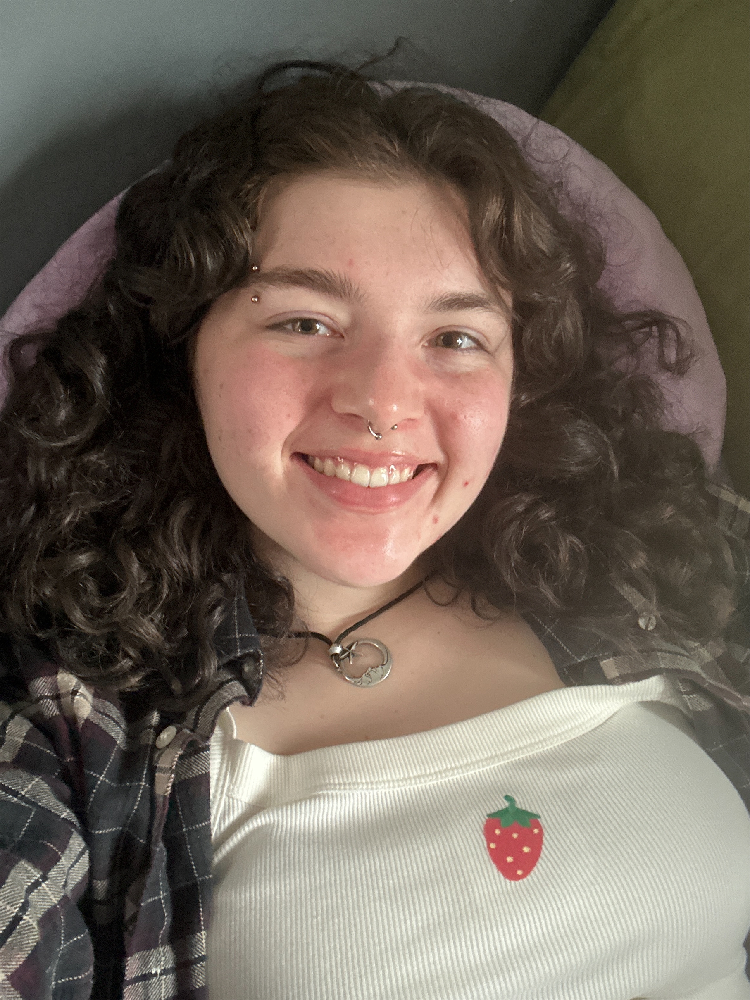

My reasearch focuses on environmental issues. In college I studied environmental science because of my interest in all science disciplines. It led to me discovering GIS and adding it as a certificate. I fell in love with it and used it to measure NDVI, map watersheds, classify land cover, conduct change detection, and measure proximal exposure to chemicals. My final GIS class was a geographic visualization class that taught me how to best communicate my findings. Through this class I also learned to code this website using html. This added to thecoding languages I was familiar joining SQL. GIS is very important to me because it allows for the effective communication of complex topics and allows for use in solving a real-world problems. There are lots of variables to consider and maps are able to make these relationships obvious. One of my final projects did this by using PGAdmin 4 and SQL queries to find how the area of crop land in different Iowa counties coorelated to different health variables. Then socio economic standings were compared to see if different demographics were more effected. Calling out these patterns allows for further research to be done and for change to occur. I am commited to helping this happen in any way I can.